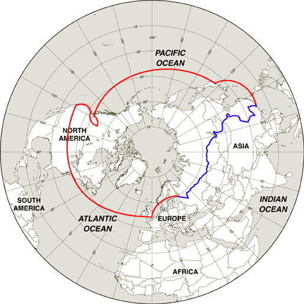

Itinerary
We’re hitting three primary countries: Russia, Mongolia, and China, with England thrown in for a layover, and Japan tacked on the end (mostly because after going through Russia, Mongolia, and China, we’re gonna need a break before going home). The map below shows the basic route we’re planning to take. The line in red is where we have to fly, and the line in blue is the part we’re doing by rail.

Friday April 29
Fly from Calgary/San Francisco to London
Saturday April 30
London – yarn shopping and pubs, and maybe the Tate Modern.
Monday May 2
Saint Petersburg – Hermitage baby!
Saturday May 7
Moscow – We’re staying in a hotel ON the Red Square.
Tuesday May 10
Kazan – The capital of Tartarstan, we’re just here for a day between night trains
Wednesday May 11
Yekaterinburg – an overnight stop before 2 nights on the train
Saturday May 14
Krasnoyarsk – another day trip between night trains
Sunday May 15
Irkutsk – two nights here, including a visit to Lake Baikal
Tuesday May 17
Ulan Ude – the center of Russian Buddhism, apparantly
Friday May 20
Ulaan Baatur and Mongolia – we have a 5 day tour booked to get out of the cities
Friday May 27
Beijing – The Great Wall, TianJin Antique market, and more
Wednesday June 1
Xi’An – Terracotta warriors
Saturday June 4
Guilin and Yangshuo – gorgeous scenery and a river
Thursday June 9
Guangzhou – dim sum!
Friday June 10
Hong Kong – more yarn shopping!
Tuesday June 14
Tokyo and Yotsukaido – visiting Geoff’s friends Chris and Kaz, and the Tsukiji Tuna Auction
Thursday June 16
Kyoto and Nara – a quick stop at the Silver Pagoda in Kyoto, followed by two nights in the ancient city of Nara
Saturday June 18
Osaka – sushi! The Hyatt!
Sunday June 19
Home via San Francisco
How are we getting around, you ask? Planes, trains, and automobiles!
Well, maybe not the automobiles. More likely buses than cars, really.
Unless you count the taxis, anyway.
Our flight paths take us from Calgary through San Francisco (and in Geoff’s case, through Seattle as well) to London, England. Then we fly to St. Petersburg, where our overland portion of the trip begins.
From there we travel to Moscow, Ekaterinburg (or Yekaterinburg, depending on spelling), Krasnoyarsk, Irkutsk, Ulan Ude, Ulaan Baatar, Beijing, Xi’an, Guilin, Yangshuo, Guangzhou, and Hong Kong, all by train. Within those stops, we will likely use other transportation like buses, cars, boats, streetcars, and so forth. Whether or not we have to use more esoteric stuff like hot air balloons, hang gliders, or pogo sticks depends on what kind of madcap movie happens to be filming nearby at the time.
We fly from Hong Kong to Tokyo, Japan, where we will spend a few days “recovering” from the wilds of Russia, Mongolia, and China in quasi-familiar territory before going home. We don’t want to culture shock ourselves too much. Trains will take us from Narita Airport to Yotsukaido (to visit Geoff’s friends), then to Tokyo, Kyoto (by shinkansen), Nara (for a couple of days), and to Osaka. A shuttle train will take us from Osaka to the airport for our flight home.